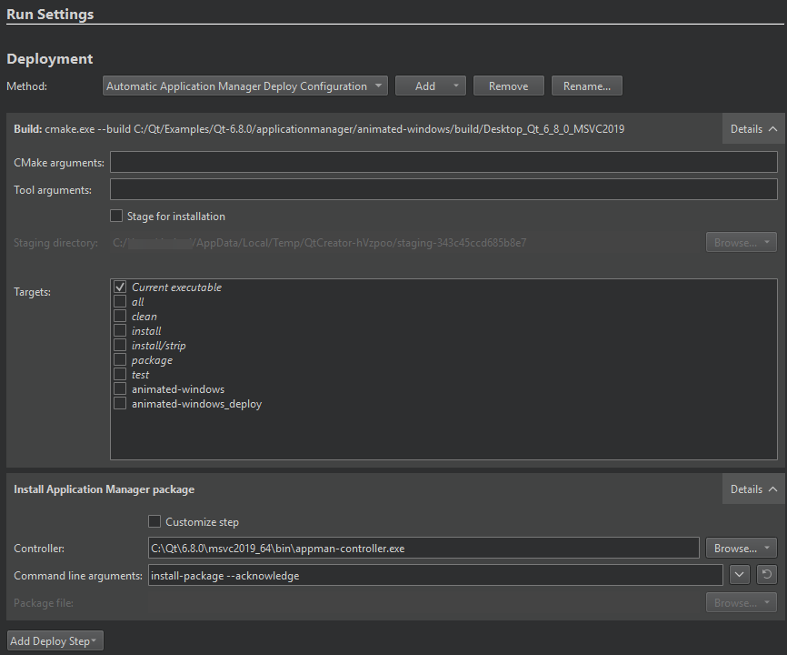
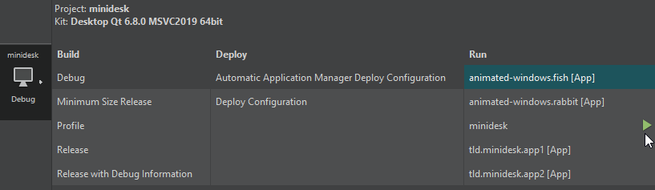
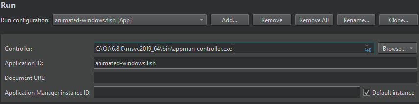

Run in Qt Application Manager
If you have set up Qt Application Manager, you can deploy, run, and debug applications on the desktop, remote generic SSH Linux targets, or Boot2Qt devices. The applications can be either built-in applications or third-party applications. The former are part of the System UI or the base installation, while the latter are dynamically installed, updated, and uninstalled.
Note: Enable the experimental Application Manager plugin to use it.
To build a Qt Application Manager project, deploy it, and run selected apps in the System UI:
- Open an application manager project.
- In Projects > Build & Run, select a kit that specifies the Qt version and the device to use.
- Go to Preferences > Devices and specify a connection to the device.
- In Projects > Build & Run, specify settings for deploying and running the application with the selected kit.
- In the kit selector, select
 for the run target.
for the run target.
You can see command-line output in the Application Output view. You can start, stop, and debug applications from there.
On Linux, running a multi-process application starts a new process that you can stop. If the application uses a runtime of the type qml-inprocess, or you are running on Windows or macOS, you cannot debug it as an individual process. However, you can debug it as a part of the System UI.
Debugging works transparently if you set it up for the run target.
Application manager CMake functions
Since Qt 6.7, when using CMake as the build system, use the following functions in the CMakeLists.txt file to indicate, which applications to create as built-in packages and which to create as installable packages:
Customize the installation
To change the settings for deploying and running the application with the selected kit, go to Projects and select Build & Run > Run.

Automatic deployment configuration selection
In an application manager project, the targets need different deployment mechanisms. The System UI is deployed with the default deployment configuration, while all application manager packages use an automatic application manager deploy configuration, which deploys only the package itself when an installable package should be started.
The appropriate deployment configuration is automatically selected when the current run configuration changes.
Deployment configuration
In Method, Automatic Application Manager Deploy Configuration adds the necessary CMake and tool arguments, as well as Targets to the effective Build command. You can select the targets in the kit selector to deploy and run applications on them.

Installation settings
In Install Application Manager Package, you can customize the install-package command.
Qt Creator uses the compiler from the kit (toolchain) to build the application. Then, it installs the application package into the target system using the Controller executable that must be running on the target. It is delivered with Qt Application Manager.
In Command line arguments, the --acknowledge argument automatically acknowledges the installation. If the System UI implemented a confirmation dialog, you can remove this flag to show the dialog to the user when installing the package.
To install some other package, select Customize step, and then enter the path to the package file in Package file.
Application manager run settings
To specify settings for running applications, go to Projects > Run Settings.

The following table summarizes the run settings for each application.
| Setting | Value |
|---|---|
| Controller | The path to the controller that installs the application package into the target system. When you run applications on a Boot2Qt device, you can see the device ID here. |
| Application ID | The ID of the ApplicationManager application. |
| Document URL | The URL is passed to the started application, which can use it to start an action, such as opening the passed file URL. |
| Application Manager instance ID | The name of this application manager instance. Only useful if you are running multiple instances at the same time and you need to address them from the controller. A unique number is appended to this ID to disambiguate instances with the same ID. If you have several application manager instances running, you can override the instance ID in the |
| Default instance | Always communicates with the default instance. |
Profile Qt Quick applications
You can use the QML Profiler to find causes for typical performance problems in your Qt Quick applications, such as slowness and unresponsive, stuttering user interfaces. You cannot profile an in-process runtime as an individual process.
See also Activate kits for a project, Connecting Boot2Qt Devices, Connecting Remote Linux Devices, Enable and disable plugins, Run on many platforms, Debugging, and Profiling QML Applications.